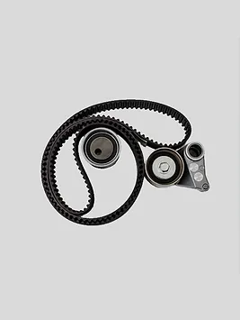

Timing Bellt

Ціна: $40
Країна: Німеччина
Постачальник: AUTOPARTSE
Кількість в наявності: 40
Опис:
Timing Belt - це важливий компонент двигуна автомобіля, який відповідає за синхронізацію
руху поршнів і клапанів. Цей ремінь забезпечує правильний робочий режим двигуна, координуючи рухи
цих важливих елементів і запобігаючи їх зіткненню.
Особливості:
Синхронізація двигуна: Timing Belt дозволяє забезпечити правильну синхронізацію роботи
двигуна, що забезпечує ефективну роботу поршнів і клапанів.
Надійність і довговічність: Виготовлений з високоякісних матеріалів, ремінь відзначається
надійністю і довговічністю, що забезпечує безперебійну роботу двигуна протягом
тривалого часу.
Важливий елемент для здоров'я двигуна: Правильний стан ременя є важливим для здоров'я
двигуна, оскільки його розрив може призвести до серйозних пошкоджень та витрат на ремонт.
Характеристики:
Матеріал: Гумовий композит з армуванням
Сумісність: Підходить для різних марок і моделей автомобілів.